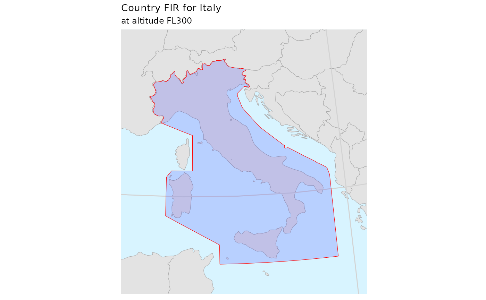
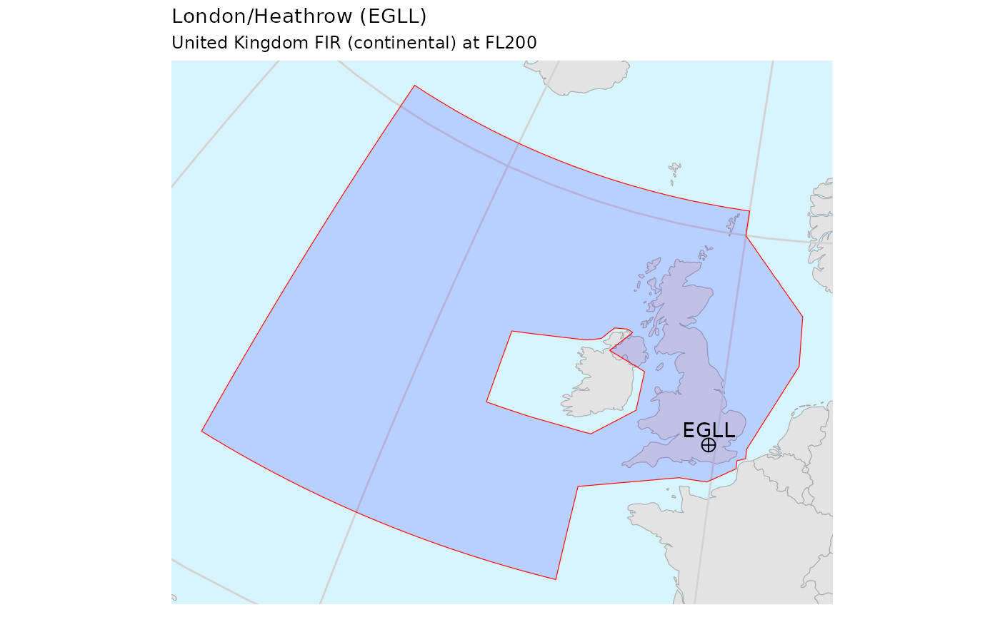
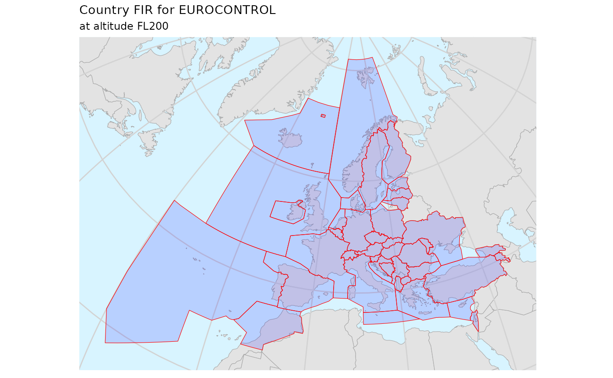
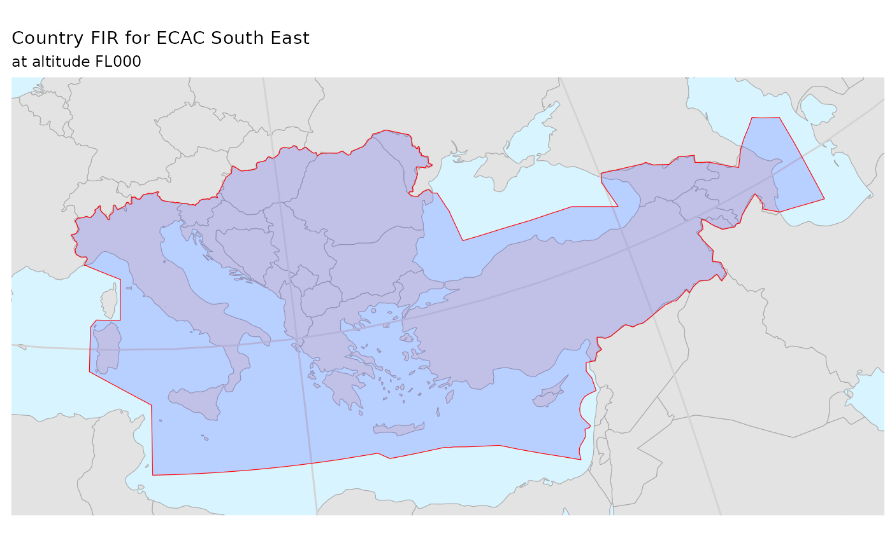

library(pruatlas)
library(dplyr)
#>
#> Attaching package: 'dplyr'
#> The following objects are masked from 'package:stats':
#>
#> filter, lag
#> The following objects are masked from 'package:base':
#>
#> intersect, setdiff, setequal, union
library(sf)
#> Linking to GEOS 3.10.2, GDAL 3.4.2, PROJ 8.2.1; sf_use_s2() is TRUE
library(ggplot2)
library(stringr)
library(readr)
library(purrr)Single Country
FIR
Let’s plot Italian FIR at FL300
plot_country_fir("LI", "Italy", fl = 300)
For UK, things are more complicated because it has also an Oceanic bit of volume
plot_country_fir("EG", "UK (oceanic)", fl = 200)
So to plot the continental part only we need to split things:
uk_continental <- firs_nm_406 %>%
dplyr::filter(icao == "EG", min_fl <= 0, 0 <= max_fl) %>%
dplyr::filter(!(id %in% c("EGGXFIR", "EGGX")))
plot_country_fir(
"EG",
"UK (continental)",
firs = uk_continental,
fl = 200)
Aiport location in FIR
# some airports
apts <- tibble::tribble(
~ICAO_CODE, ~IATA_CODE, ~LON, ~LAT, ~NAME,
"EDDF", "FRA", 8.5706, 50.0333, "Frankfurt",
"EHAM", "AMS", 4.7642, 52.3080, "Amsterdam",
"LFPG", "CDG", 2.5478, 49.0097, "Paris/Charles-De-Gaulle",
"EGLL", "LHR", -0.46139, 51.4775, "London/Heathrow"
)
# transform to sf
apts_sf <- apts %>%
st_as_sf(coords = c("LON", "LAT"), crs = 4326)
# keep only EGLL
apt <- apts_sf %>%
filter(ICAO_CODE == "EGLL")
# single country (FIR)
uk_continental <- firs_nm_406 %>%
dplyr::filter(icao == "EG", min_fl <= 0, 0 <= max_fl) %>%
dplyr::filter(!(id %in% c("EGGXFIR", "EGGX")))
bbox <- uk_continental %>%
st_transform(crs = sf::st_crs(3035)) %>%
st_bbox()
plot_country_fir(
"EG",
"UK (continental)",
firs = uk_continental,
fl = 200) +
ggplot2::geom_sf(
data = apt,
shape = 10,
size = 3) +
ggplot2::geom_sf_text(
data = apt,
aes(label = ICAO_CODE),
vjust = -0.5) +
# (re-)zoom to the correct bounding box
ggplot2::coord_sf(xlim = bbox[c(1, 3)], ylim = bbox[c(2, 4)]) +
# (re-)define the title and subtitle (`plot_country_fir()` adds its own)
ggtitle(label = str_glue("{name} ({icao})", name = apt$NAME, icao = apt$ICAO_CODE),
subtitle = "United Kingdom FIR (continental) at FL200")
#> Coordinate system already present. Adding new coordinate system, which will replace the existing one.
EUROCONTROL
Merged Member States FIRs
For plotting EUROCONTROL Member States’ FIR area we can select and merge the various airspaces:
plot_country_fir(icao_id = "E.|L.|UD|UG|GM|UK|GC",
"EUROCONTROL",
buffer = 350,
fl = 200)All Member States FIRs
ms_codes <- member_states %>%
# filter out Germany (military, no specific FIR),
# Luxembourg (managed by Belgium) and Monaco (managed by France)
filter(!icao %in% c("ET", "EL", "LN")) %>%
pull(icao) %>%
sort() %>%
unique()
ms_firs <- ms_codes %>%
purrr::map_dfr(~ suppressMessages(
country_fir(pruatlas::firs_nm_406, icao_id = .x))) %>%
mutate(id = str_sub(id, 1, 2)) %>%
left_join(member_states, by = c("id" = "icao")) %>%
mutate(
name = case_when(
id == "EB" ~ "Belgium and Luxemburg",
id == "LF" ~ "France and Monaco",
id == "EG" ~ "United Kingdom",
TRUE ~ name),
icao = id,
min_fl = 200,
max_fl = 200)
plot_country_fir(firs = ms_firs,
icao_id = ms_codes,
fl = 200,
name = "EUROCONTROL",
merge = FALSE)
#> Warning in stri_detect_regex(string, pattern, negate = negate, opts_regex =
#> opts(pattern)): longer object length is not a multiple of shorter object length
CRCO Charging Zones
You can get the CRCO charging zones boundaries from EUROCONTROL web site. This package stores a real file as an example.
bo <- system.file("extdata", "sbm_bz_20200527.txt", package = "pruatlas")
crco <- readr::read_lines(bo) %>%
parse_airspace_crco() %>%
mutate(icao = unit)
codes <- crco %>% pull(icao) %>% unique()
# country_fir(firs = crco,
# icao_id = "E.|L.|UD|UG|GM|UK|GC",
# fl = 200, merge = FALSE)
#
# ggplot(crco) + geom_sf()
plot_country_fir(firs = crco,
fl = 200,
icao_id = codes,
name = "CRCO charging zones",
merge = FALSE)
STATFOR Areas
ECAC Oceanic
ecac_oceanic() %>%
plot_country_fir(icao_id = "ECOC",
name = "ECAC Oceanic",
firs = .)ECAC North West
ecac_northwest() %>%
plot_country_fir(icao_id = "ECNW",
name = "ECAC North West",
firs = .)
ECAC South West
ecac_southwest() %>%
plot_country_fir(icao_id = "ECSW",
name = "ECAC South West",
firs = .)
ECAC North East
ecac_northeast() %>%
plot_country_fir(icao_id = "ECNE",
name = "ECAC North East",
firs = .)
ECAC South East
ecac_southeast() %>%
plot_country_fir(icao_id = "ECSE",
name = "ECAC South East",
firs = .)
Complete ECAC
ecac_region() %>%
plot_country_fir(icao_id = "ECAC",
name = "ECAC",
firs = .)North Atlantic
st_segmentize improved things but THIS IS still BAD!
firs <- system.file("extdata", "icao_firs.geojson", package = "pruatlas") %>%
read_sf() %>%
rename(icao = icao_code)
north_atlantic() %>%
sf::st_segmentize(dfMaxLength = units::set_units(50, km)) %>%
plot_country_fir(icao_id = "NOAT",
name = "STATFOR North Atlantic",
firs = .)